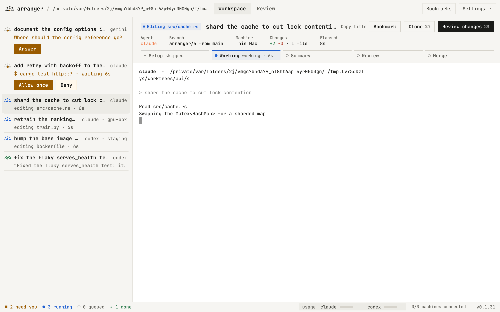

THE QUEUE
Not a wall of terminals. A list of who's waiting on you.
Five agents running is easy. Knowing which one has been stuck on a permission prompt for twenty minutes is the hard part. arranger watches every edit, command and question and sorts the room by that.
- Approve, deny or answer in place. Permission requests and questions surface at the top with what the agent wants to do. ⌘1 ⌘2, or J K to jump between the ones that need you.
- Your agent, unwrapped. Claude Code and Codex keep their own interface, slash commands and keys. arranger listens through the agents' hooks; it doesn't put a chat window in front of them.
- Every machine in one list. Agents on your laptop, a GPU box and a dev server sit side by side, grouped by machine.
- Revive or clone a take. An ended agent resumes its last session in the same worktree; ⌘D forks a task, chat and edits included, to try another approach or model.
- Keyboard first, or no window at all. Vim keys are one toggle away, and every action works from the shell:
arranger ls,approve 3,commit 3 --pr.